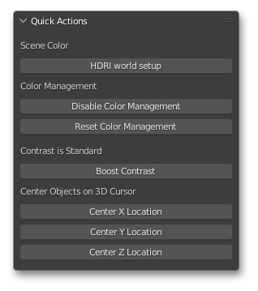
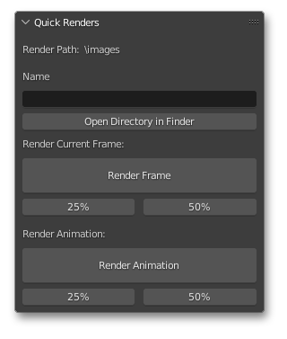
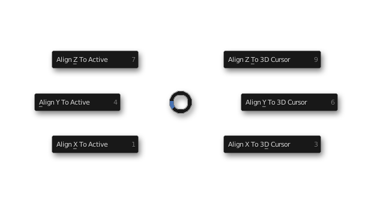

DOCUMENTATION
2022 LUKE STILSON
Blender Pixel Perfect Python Extensions and Asset Library
Created by Luke Stilson 2022
TOOLS DOCUMENTATION
Quick Actions

The Quick Actions panel is a catch-all for useful tools to reduce clicks for repetitive tasks.
HDRI world setup creates world nodes using the default .exr "courtyard".
Disable Color Management sets the Display Device>Look in Output Properties to 'NONE', rendering in true color
Reset Color Management sets the Display Device>Look in Output Properties to 'Filmic', Blender's default, for photorealistic rendering puropses.
Boost Contrast cycles through Display Contrast settings to globally increase contrast in the project.
Center Location buttons essentially perform "Selection to Cursor (Keep Offset)" if 2 objects are selected.

Quick Renders and Quick animations are a one-click solution to render and save images. Images are saved in an Images folder at the location of the .blend file. The percentages listed act as the scale of the render (i.e. a 50% render of a scene with render resolution 1024x1024 will render at 512x512)
Note the image may not display while rendering (Blender may appear frozen for large renders), or display incorrectly in Blender when finished rendering, view the saved file (Open Directory in Folder) to check the actual result when finished. 
When Quick Actions is added from the Tool Manager, the Align Menu will be automatically added.
The Align Menu can be accessed in the 3D Viewport with the hotkey "E". Align all selected objects to either the Active Object or 3D cursor location by axis.
This is essentially (Shift+S), but per axis rather than absolute